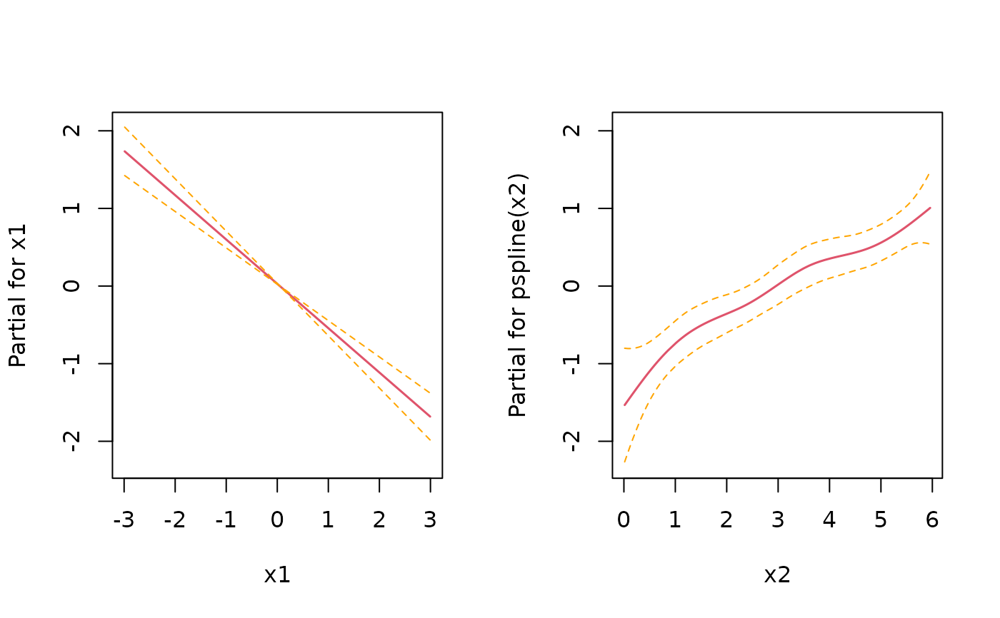

R/sim-pexp.R
sim_pexp.RdSimulate survival times from the piece-wise exponential distribution
sim_pexp(formula, data, cut)An extended formula that specifies the linear predictor.
If you want to include a smooth baseline
or time-varying effects, use t within your formula as
if it was a covariate in the data, although it is not and should not
be included in the data provided to sim_pexp. See examples
below.
A data set with variables specified in formula.
A sequence of time-points starting with 0.
library(survival)
library(dplyr)
#>
#> Attaching package: ‘dplyr’
#> The following objects are masked from ‘package:stats’:
#>
#> filter, lag
#> The following objects are masked from ‘package:base’:
#>
#> intersect, setdiff, setequal, union
library(pammtools)
# set number of observations/subjects
n <- 250
# create data set with variables which will affect the hazard rate.
df <- cbind.data.frame(x1 = runif (n, -3, 3), x2 = runif (n, 0, 6)) %>%
as_tibble()
# the formula which specifies how covariates affet the hazard rate
f0 <- function(t) {
dgamma(t, 8, 2) *6
}
form <- ~ -3.5 + f0(t) -0.5*x1 + sqrt(x2)
set.seed(24032018)
sim_df <- sim_pexp(form, df, 1:10)
head(sim_df)
#> # A tibble: 6 × 5
#> id time status x1 x2
#> <int> <dbl> <int> <dbl> <dbl>
#> 1 1 1.00 1 -2.87 4.14
#> 2 2 4.20 1 1.20 5.61
#> 3 3 4.53 1 -0.951 2.46
#> 4 4 2.07 1 0.331 3.71
#> 5 5 3.02 1 2.98 4.98
#> 6 6 2.32 1 -1.91 1.43
plot(survfit(Surv(time, status)~1, data = sim_df ))
# for control, estimate with Cox PH
mod <- coxph(Surv(time, status) ~ x1 + pspline(x2), data=sim_df)
coef(mod)[1]
#> x1
#> -0.5711059
layout(matrix(1:2, nrow=1))
termplot(mod, se = TRUE)

# and using PAMs
layout(1)
ped <- sim_df %>% as_ped(Surv(time, status)~., max_time=10)
library(mgcv)
#> Loading required package: nlme
#>
#> Attaching package: ‘nlme’
#> The following object is masked from ‘package:dplyr’:
#>
#> collapse
#> This is mgcv 1.8-38. For overview type 'help("mgcv-package")'.
pam <- gam(ped_status ~ s(tend) + x1 + s(x2), data=ped, family=poisson, offset=offset)
coef(pam)[2]
#> x1
#> -0.5534093
plot(pam, page=1)
if (FALSE) {
# Example 2: Functional covariates/cumulative coefficients
# function to generate one exposure profile, tz is a vector of time points
# at which TDC z was observed
rng_z = function(nz) {
as.numeric(arima.sim(n = nz, list(ar = c(.8, -.6))))
}
# two different exposure times for two different exposures
tz1 <- 1:10
tz2 <- -5:5
# generate exposures and add to data set
df <- df %>%
add_tdc(tz1, rng_z) %>%
add_tdc(tz2, rng_z)
df
# define tri-variate function of time, exposure time and exposure z
ft <- function(t, tmax) {
-1*cos(t/tmax*pi)
}
fdnorm <- function(x) (dnorm(x,1.5,2)+1.5*dnorm(x,7.5,1))
wpeak2 <- function(lag) 15*dnorm(lag,8,10)
wdnorm <- function(lag) 5*(dnorm(lag,4,6)+dnorm(lag,25,4))
f_xyz1 <- function(t, tz, z) {
ft(t, tmax=10) * 0.8*fdnorm(z)* wpeak2(t - tz)
}
f_xyz2 <- function(t, tz, z) {
wdnorm(t-tz) * z
}
# define lag-lead window function
ll_fun <- function(t, tz) {t >= tz}
ll_fun2 <- function(t, tz) {t - 2 >= tz}
# simulate data with cumulative effect
sim_df <- sim_pexp(
formula = ~ -3.5 + f0(t) -0.5*x1 + sqrt(x2)|
fcumu(t, tz1, z.tz1, f_xyz=f_xyz1, ll_fun=ll_fun) +
fcumu(t, tz2, z.tz2, f_xyz=f_xyz2, ll_fun=ll_fun2),
data = df,
cut = 0:10)
}